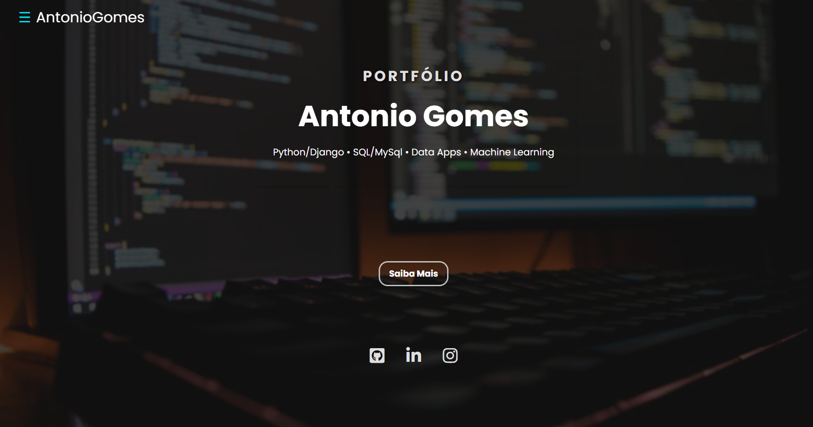
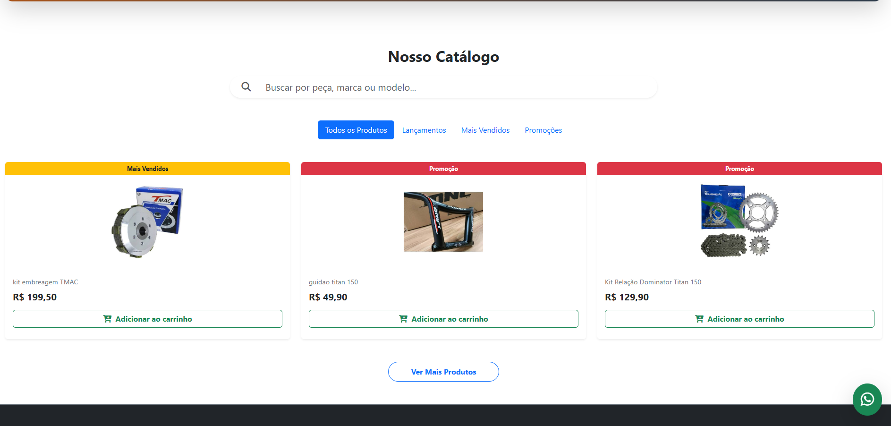

Engenharia de Software & Arquitetura Backend • Python / Django • APIs RESTful • Docker • SQL
Graduado em Análise e Desenvolvimento de Sistemas e em especialização em Engenharia de Software (FullCycle), foco minha atuação na construção de arquiteturas backend robustas, escaláveis e sustentáveis com Python, Django, APIs RESTful, SQL e Docker.
Minha experiência anterior me deu uma visão estratégica de processos: automatizando fluxos e aplicando análise exploratória em Python, consegui entregar 98% de acurácia em inventários e uma redução de 20% em erros operacionais, poupando 15 horas semanais de trabalho manual.
Hoje, aplico essa mesma mentalidade de eficiência na engenharia de software — combinando Clean Architecture, Clean Code, testes automatizados e containerização para entregar plataformas confiáveis em produção, de APIs a sistemas Micro-SaaS.
Um pouco sobre minha trajetória no mundo da programação
2026 - Presente
De forma independente, atuo com o desenvolvimento de software de ponta a ponta: levantamento de requisitos, prototipação, codificação (foco em arquitetura backend com Python e Django, e interfaces dinâmicas), testes, documentação, implementação em ambientes conteinerizados (Docker) e bancos de dados (PostgreSQL / MySQL). Foco na entrega de sistemas escaláveis e sustentáveis em produção, aplicando Clean Code, SOLID e arquiteturas multi-tenant.
Graduado - Junho 2026
Formação focada em desenvolvimento e análise de sistemas, incluindo programação, arquitetura de software, modelagem de banco de dados, gerenciamento de projetos, segurança da informação e desenvolvimento web e mobile.
Concluído - Dezembro 2026
Formação intensiva em Engenharia de Software com foco em Clean Architecture, Clean Code, testes automatizados (Pytest), containerização com Docker e Docker Compose, observabilidade (Prometheus/Grafana), testes de carga (k6) e boas práticas para aplicações em produção.
Concluído - Dezembro 2023
Formação em ciência de dados com foco em Python, manipulação e análise de dados com Pandas e NumPy, visualização com Matplotlib e Seaborn, estatística aplicada, machine learning com Scikit-learn e boas práticas de desenvolvimento.
Clean Architecture, Clean Code, SOLID, Testes Automatizados (Pytest) e documentação técnica.
Python, Django, APIs RESTful, modelagem relacional (PostgreSQL/MySQL) e sistemas multi-tenant.
Docker, Docker Compose, deploy em produção, métricas (Prometheus/Grafana) e testes de carga (k6).
visão sistêmica de negócios herdada da Logística, autonomia de entrega ponta a ponta.

Este projeto tem como objetivo criar um portfólio visualmente atrativo e funcional, apresentando de forma clara os projetos e habilidades de um desenvolvedor. A estrutura do site foi pensada para oferecer uma navegação intuitiva e uma experiência de usuário dinâmica, com um layout responsivo que se adapta a diferentes tamanhos de tela.
Ver CódigoEste projeto é uma ferramenta interativa desenvolvida em Streamlit para registrar, analisar e visualizar de forma eficiente as despesas e receitas residenciais. Ele utiliza o Google Sheets como backend de dados, demonstrando habilidades em integração de API e visualização de dados em tempo real.
Ver Código
Vitrine digital e catálogo interativo do ecossistema Plataforma Barra, com painel administrativo integrado para gestão de produtos e banners. Desenvolvido sob arquitetura multi-tenant, testes automatizados e containerização em Docker.
Ver CódigoSe você precisa de sistemas web sob medida, arquiteturas backend escaláveis ou automação de processos com Python,
você está no lugar certo!
Desenvolvimento de sistemas backend robustos com Python e Django aplicando Clean Architecture, Clean Code e modelagem de bancos relacionais (PostgreSQL/MySQL). Foco em APIs escaláveis, seguras, bem documentadas e fáceis de manter.
Saiba MaisCriação de plataformas web completas e sistemas multi-tenant sob medida para negócios, do levantamento de requisitos ao deploy. Interfaces limpas e funcionais conectadas a regras de negócio sólidas e prontas para escalar em produção.
Saiba MaisEstruturação de ambientes containerizados com Docker e Docker Compose, cobertura de testes automatizados (Pytest) e monitoramento de aplicações em produção (Prometheus/Grafana), garantindo confiabilidade e alta disponibilidade.
Saiba Mais